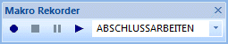
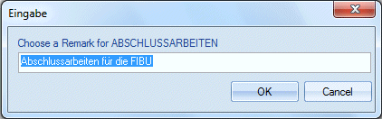
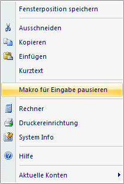
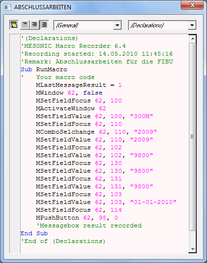
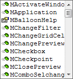

Makros können auf zwei Arten angelegt werden:
ü Über einen eigenen Menüpunkt
ü Über den Ribbon
Die Anlage über den Ribbon ist die einfachere Methode, da über den Menüpunkt die Aufnahme nicht gestartet werden kann. Die Buttonleiste kann durch Anklicken der rechten Maustaste neben der Buttonleiste und Auswahl der Option "Makro Rekorder" geöffnet werden.
Die Buttonleiste

bietet folgende Funktionen:
Ø Eingabefeld
Das Eingabefeld bietet zwei Möglichkeiten
ü Auswahl eines bestehenden
Makros
Aus der Auswahllistbox kann ein bereits vorhandenes Makro ausgewählt
werden, das dann zur weiteren Bearbeitung zur Verfügung steht.
ü Anlage eines neuen Makros
Ein
neues Makro kann angelegt werden, indem im Eingabefeld der Name des neuen Makros
eingetragen wird. Wird diese Eingabe bestätigt, erhalten Sie die Abfrage, ob ein
neues Makro angelegt werden soll.
Nachdem ein Makro ausgewählt wurde, können zwei Buttons ausgewählt werden:
Ø Makro Aufzeichnen
Wird dieser Button angeklickt, wird die Aufzeichnung des Makros gestartet. Es wird jede Aktion, die innerhalb der WinLine ausgeführt wird, aufgezeichnet.
Nach Starten der Aufzeichnung kann eine Beschreibung des Makros eingegeben werden.

Welche Aktionen können aufgezeichnet werden?
Grundsätzlich werden alle Tastatureingaben aufgezeichnet. Dazu wird auch jeder Mausklick (z.B. auf den Despoolen-Button oder auf den OK-Button etc.) aufgezeichnet.
Innerhalb des Makros können aber auch Eingaben durchgeführt werden. Dazu muss während der Aufnahme im gewünschten Feld die rechte Maustaste geklickt und dann die Option
Ø Pause Macro for Input

gewählt werden. Diese Option ist aber nur in Eingabefeldern möglich und kann innerhalb einer Tabelle (z.B. "Buchen Dialog Stapel" oder "Belegerfassung") nicht verwendet werden.
Ø Makro wiedergeben
Wird dieser Button angeklickt, wird das eingegebene Makro "abgespielt", wobei alle Aktionen wie bei der Aufnahme durchgeführt werden.
Wurde im Makro die Option "Pause Macro for Input" verwendet, dann bleibt das Makro im entsprechendem Eingabefeld stehen und es kann die erforderliche Eingabe durchgeführt werden. In diesem Fall wird auch der Pause-Button () aktiviert. Das Makro wird durch Drücken der F11-Taste (diese Information wird auch beim entsprechendem Eingabefeld angezeigt) bzw. durch Anklicken des Pause-Buttons fortgesetzt.
Wurde eine Makroaufnahme gestartet, steht der - Button zur Verfügung. Damit kann die Aufnahme des Makros gestoppt werden. Beim Abspielen von Makros hat der Button nur dann eine Funktion, wenn eine Eingabe gefordert wird.
Wurde bei einer Aufnahme der Stop-Button angeklickt, wird anschließend das Fenster dargestellt, in dem das Makro in VB-Script angezeigt wird.
In diesem Fenster können auch noch notwendige Änderungen vorgenommen werden, wobei darauf zu achten ist, dass diese Änderungen so vorzunehmen sind, dass der Ablauf des Programms nicht beeinträchtigt wird.

Im Folgendem finden Sie eine Aufstellung aller Eigenschaften und Methoden, die die WinLine - Makros zulassen. Zusätzlich können alle VB-Script Befehle verwendet.
Um eine Liste aller Funktionen der WinLine im Formelfenster angezeigt zu bekommen, muss nur ein . eingetragen werden.
Dadurch wird das Feld angezeigt. Wird dieses angewählt, dann wird das Wort "CWLMacro" in das Fenster übernommen. Wenn danach nochmals ein . eingegeben wird, wird eine Listbox mit allen Funktionen angezeigt - es kann die gewünschte Funktion ausgewählt werden.

Wenn man sich durch Drücken der Pfeil-nach-Unten-Taste durch die einzelnen Einträge der Listbox bewegt, wird die Verwendung der aktuellen Funktion in einem eigenen Fenster "" angezeigt. Dadurch lässt sich erkennen, ob man die Funktion mit Parametern aufrufen muss oder nicht.
Wenn vor dem Eintrag in der Listbox das Symbol  angezeigt wird, handelt es sich um
eine Funktion.
angezeigt wird, handelt es sich um
eine Funktion.
Wenn vor dem Eintrag in der Listbox das Symbol  angezeigt wird, handelt es sich um eine
Variable.
angezeigt wird, handelt es sich um eine
Variable.